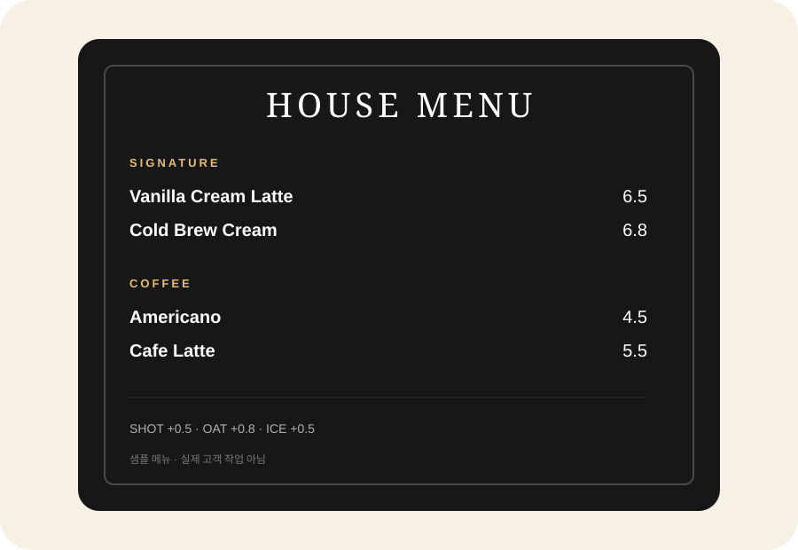

FOODSERVICE메뉴판은
메뉴판은
빨리 읽히게.
메뉴 과밀·가격 가독성·옵션 혼잡을 한눈에 정리합니다. 전체 리뉴얼보다 메뉴판 1장부터 시작합니다.
무료 5분 진단은 방향 확인까지 · 제작은 범위 합의 후 작은 유료 작업으로 시작합니다.

가격한눈에 안 보임
카테고리구분이 약함
옵션·세트선택이 복잡함
신메뉴계속 누적됨
BEFORE → AFTER
선택이 빨라지도록.
BEFORE
아메리카노4500 카페라떼5500 바닐라라떼6000 헤이즐넛라떼6000 돌체라떼6500 콜드브루5500 콜드브루라떼6000 옵션샷추가500 두유800 ICE500…
→
AFTERSIGNATUREVanilla Cream 6.5Cold Brew Cream 6.8COFFEEAmericano 4.5
※ 구조 설명용 샘플이며 실제 고객 작업이 아닙니다.
CM
SMALL PILOT
가격보다 범위를 작게 시작합니다.
메뉴판 1장, 카테고리 1개처럼 가장 작은 범위부터 먼저 써봅니다. 신메뉴·가격변경이 반복될 때만 월관리로 확장합니다.
메뉴판 1장부터작은 유료 파일럿필요 시 월관리
START SMALL메뉴판 이미지
카카오톡 5분 진단 →메뉴판 이미지
1장만 보내주세요.
5분 진단으로 가장 눈에 띄는 문제 1개를 확인하고, 범위 합의 후 작은 유료 작업으로 시작합니다.